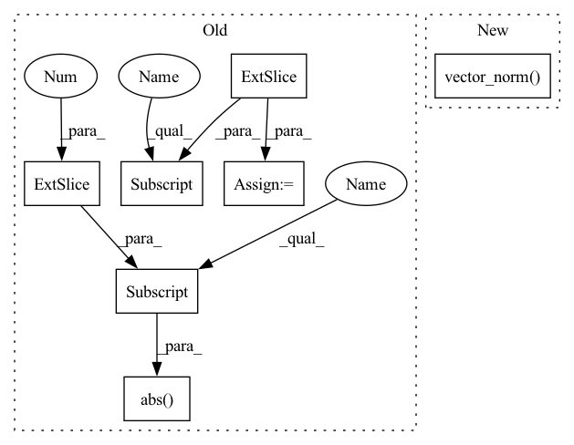

Pattern ID :26811

Before Change
def _forward(self, x):
// Transform outputs to angle and prepare prediction
norm = torch.sqrt(x[:, 0] ** 2 + x[:, 1] ** 2 + x[:, 2] ** 2)
kappa = torch.abs(x[:, 3]) + eps_like(x)
vec_x = x[:, 0] / norm
vec_y = x[:, 1] / norm
vec_z = x[:, 2] / norm
After Change
def _forward(self, x):
// Transform outputs to angle and prepare prediction
kappa = torch.linalg.vector_norm(x, dim=1) + eps_like(x)
vec_x = x[:, 0] / kappa
vec_y = x[:, 1] / kappa
vec_z = x[:, 2] / kappa
In pattern: SUPERPATTERN
Frequency: 4
Non-data size: 7
Instances
Fragment ID: 80155267
Project Name: icecube/graphnet
Commit Name: 48ee695541903969bf4faf3d010da3dd9de12fde
Time: 2022-10-14
Author: 48880272+RasmusOrsoe@users.noreply.github.com
File Name: src/graphnet/models/task/reconstruction.py
M Class Name: DirectionReconstructionWithKappa
N Class Name: DirectionReconstructionWithKappa
M Method Name: _forward(2)
N Method Name: _forward(2)
M Parent Class: Task
N Parent Class: Task
M File Name: src/graphnet/models/task/reconstruction.py
N File Name: src/graphnet/models/task/reconstruction.py
M Start Line: 50
M End Line: 54
N Start Line: 50
N End Line: 53
'>
Before Change
def _forward(self, x):
// Transform outputs to angle and prepare prediction
norm = torch.sqrt(x[:, 0] ** 2 + x[:, 1] ** 2 + x[:, 2] ** 2)
kappa = torch.abs(x[:, 3]) + eps_like(x)
vec_x = x[:, 0] / norm
vec_y = x[:, 1] / norm
vec_z = x[:, 2] / norm
After Change
def _forward(self, x):
// Transform outputs to angle and prepare prediction
kappa = torch.linalg.vector_norm(x, dim=1) + eps_like(x)
vec_x = x[:, 0] / kappa
vec_y = x[:, 1] / kappa
vec_z = x[:, 2] / kappa
'>
Fragment ID: 80155266
Project Name: icecube/graphnet
Commit Name: 48ee695541903969bf4faf3d010da3dd9de12fde
Time: 2022-10-14
Author: 48880272+RasmusOrsoe@users.noreply.github.com
File Name: src/graphnet/models/task/reconstruction.py
M Class Name: DirectionReconstructionWithKappa
N Class Name: DirectionReconstructionWithKappa
M Method Name: _forward(2)
N Method Name: _forward(2)
M Parent Class: Task
N Parent Class: Task
M File Name: src/graphnet/models/task/reconstruction.py
N File Name: src/graphnet/models/task/reconstruction.py
M Start Line: 50
M End Line: 54
N Start Line: 50
N End Line: 53
'>
Before Change
def _forward(self, x):
// Transform outputs to angle and prepare prediction
angle = super()._forward(x[:,:2]).squeeze(1)
kappa = torch.abs(x[:,2]) + eps_like(x)
return torch.stack((angle, kappa), dim=1)
class ZenithReconstructionWithKappa(ZenithReconstruction):
After Change
def _forward(self, x):
// Transform outputs to angle and prepare prediction
kappa = torch.linalg.vector_norm(x, dim=1) + eps_like(x)
angle = torch.atan2(x[:,1], x[:,0])
angle = torch.where(angle < 0, angle + 2 * np.pi, angle) // atan(y,x) -> [-pi, pi]
return torch.stack((angle, kappa), dim=1)
'>
Fragment ID: 80155265
Project Name: graphnet-team/graphnet
Commit Name: c2cefa65450c1e10b541e9b0538358e02e486a06
Time: 2021-11-16
Author: andreas.sogaard@gmail.com
File Name: src/gnn_reco/models/task/reconstruction.py
M Class Name: AzimuthReconstructionWithKappa
N Class Name: AzimuthReconstructionWithKappa
M Method Name: _forward(2)
N Method Name: _forward(2)
M Parent Class: Task
N Parent Class: AzimuthReconstruction
M File Name: src/gnn_reco/models/task/reconstruction.py
N File Name: src/gnn_reco/models/task/reconstruction.py
M Start Line: 37
M End Line: 38
N Start Line: 14
N End Line: 16